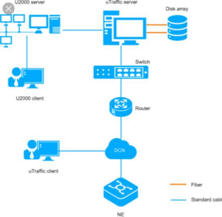

Informații Personale
Nume: Casian
Prenume: Ionuț-Cristian
Email: casiancristian@gmail.com
Structura Rețelei Personale
Schema reprezintă conexiunea dintre routerul principal, dispozitivele utilizate și furnizorul de internet.
Monitorizare Resurse
Dublu click pe această secțiune pentru a porni slideshow-ul: